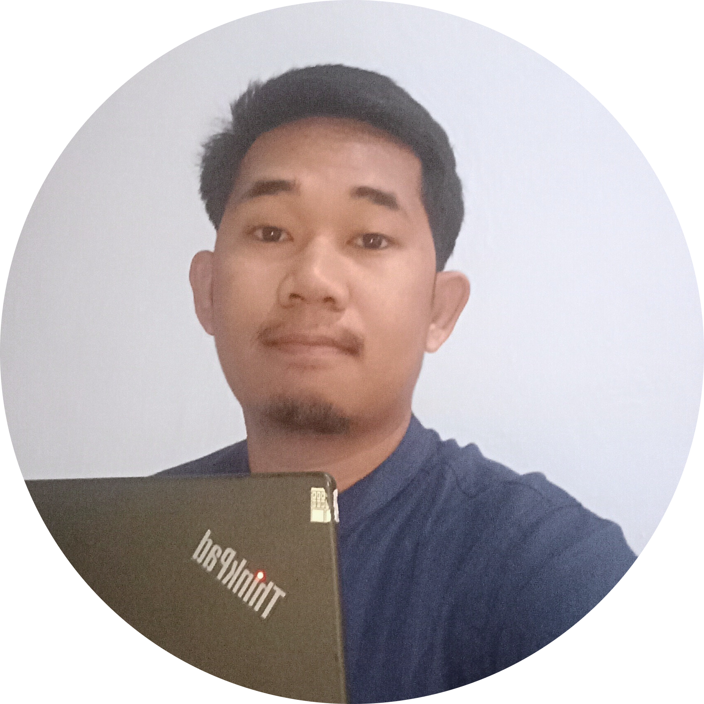

3+ tahun pengalaman membangun website responsif dengan fokus pada performa dan UX. Berhasil meningkatkan conversion rate hingga 30% pada beberapa project.

Meningkatkan conversion rate sebesar 30% dengan redesign UI/UX.
Mengurangi loading time hingga 40% dengan optimasi frontend.
Website modern dengan performa tinggi dan SEO optimal.
2022 - Sekarang
Mengerjakan berbagai project website dan dashboard skala bisnis.
Email: jumadilmustamin6@gmail.com
LinkedIn: linkedin.com/in/andi
Lokasi: Palopo - Sulawesi Selatan